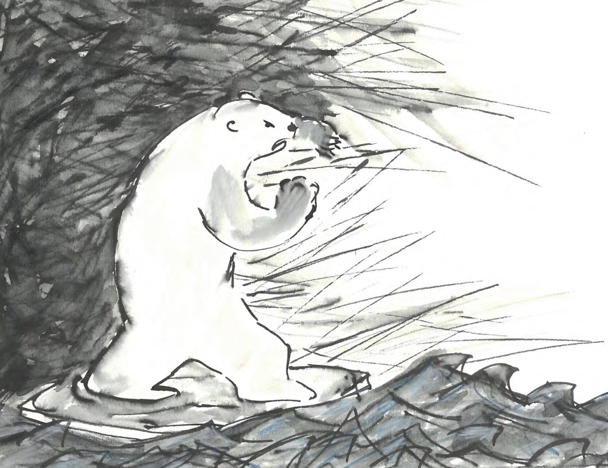
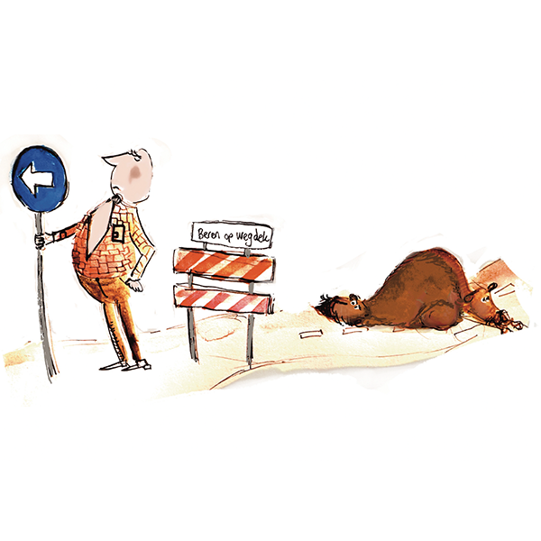
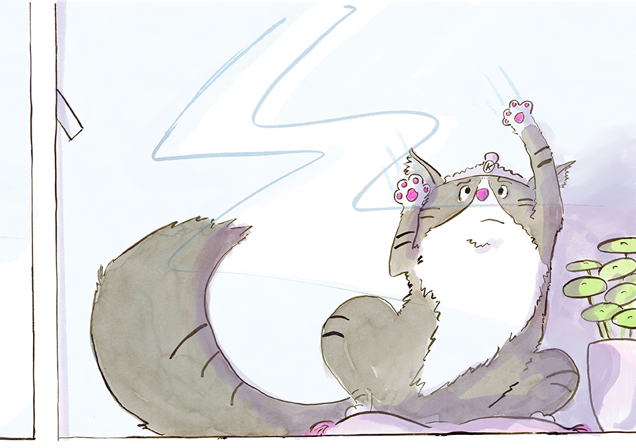
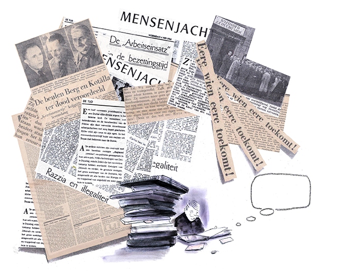
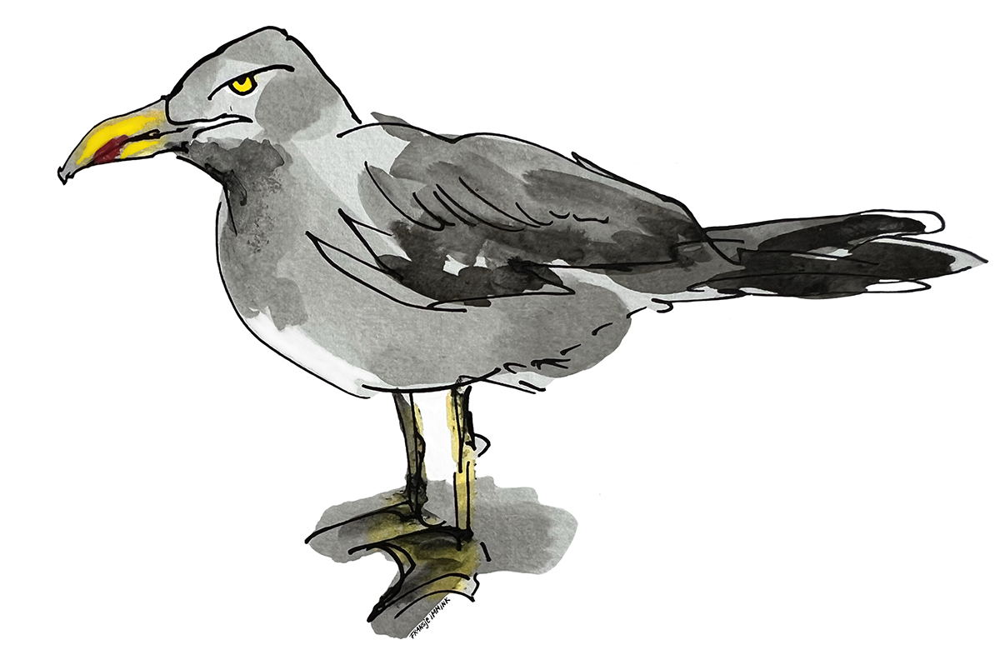
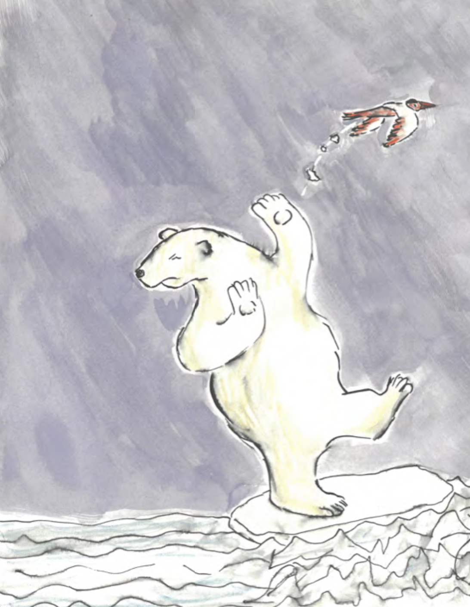
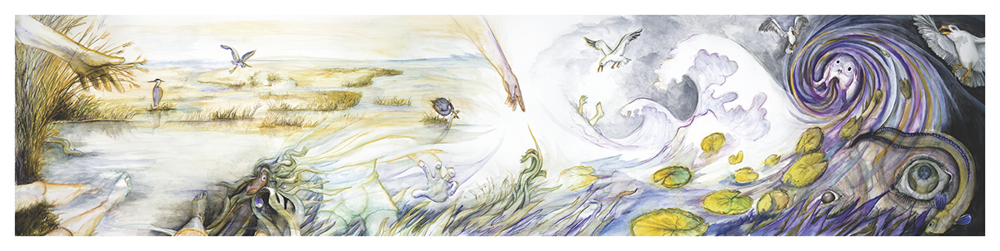
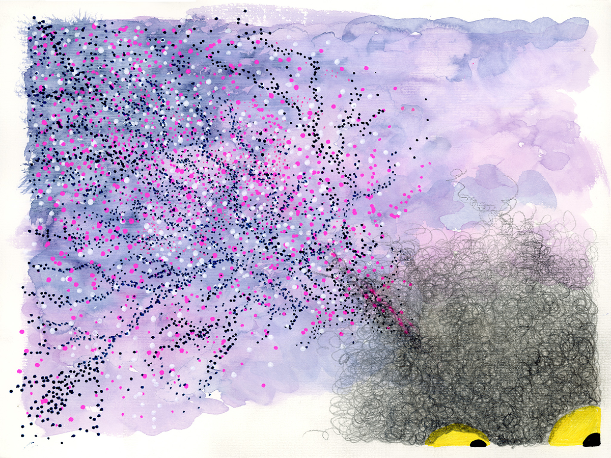
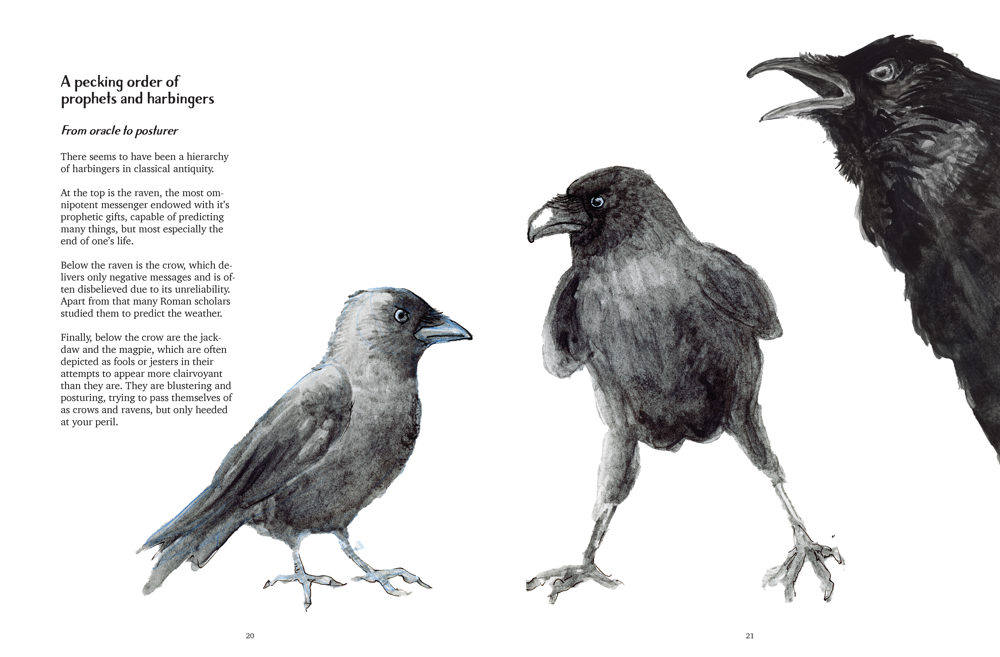

Alumni Showcase
Werk dat spreekt
Een selectie van afstudeerwerken en projecten van onze studenten en alumni. Elk beeld vertelt een verhaal.

Tentoonstelling 2024
Venster Open — de jaarlijkse afstudeertentoonstelling
📍 Keizersgracht 482, Amsterdam
📅 14–28 september 2024
🕐 di–za 11:00–18:00
Gratis toegang · Vernissage 13 sep om 17:00

Petra van der Ploeg

Erik van Tuijn

Dieuwertje Gordijn

Jessamijn

Monique van Dongen

Fransje Immink

Petra van der Ploeg

Erik van Tuijn

Erik van Tuijn

Erik van Tuijn